Warning: `gather_()` was deprecated in tidyr 1.2.0.
ℹ Please use `gather()` instead.
ℹ The deprecated feature was likely used in the survminer package.
Please report the issue at <https://github.com/kassambara/survminer/issues>.
`geom_smooth()` using formula = 'y ~ x'
`geom_smooth()` using formula = 'y ~ x'
# Generate survival plot and run Cox model for objective flare using utility# functionanalysis_result<-run_survival_analysis( data =flare.cd.df, var_name ="CReactiveProtein", outcome_time ="hardflare_time", outcome_event ="hardflare", legend_title ="CRP", plot_base_path ="plots/cd/hard-flare/biochem/crp", break_time_by =500)# Extract hazard ratio for continuous CRP variablefit.me<-coxph(Surv(hardflare_time, hardflare)~Sex+IMD+cat+CReactiveProtein+frailty(SiteNo), control =coxph.control(outer.max =20), data =flare.cd.df)cd.hard.forest<-rbind(cd.hard.forest,get_HR(fit.me, "CReactiveProtein"))# Display plot and model summaryknitr::include_graphics("plots/cd/hard-flare/biochem/crp.png")
# Generate survival plot and run Cox model for objective flare using utility# functionanalysis_result<-run_survival_analysis( data =flare.uc.df, var_name ="CReactiveProtein", outcome_time ="hardflare_time", outcome_event ="hardflare", legend_title ="CRP", plot_base_path ="plots/uc/hard-flare/biochem/crp", break_time_by =500)# Extract hazard ratio for continuous CRP variablefit.me<-coxph(Surv(hardflare_time, hardflare)~Sex+IMD+cat+CReactiveProtein+frailty(SiteNo), control =coxph.control(outer.max =20), data =flare.uc.df)uc.hard.forest<-rbind(uc.hard.forest,get_HR(fit.me, "CReactiveProtein"))# Display plot and model summaryknitr::include_graphics("plots/uc/hard-flare/biochem/crp.png")
# Categorize Haemoglobin by quantilesflare.cd.df<-categorize_by_quantiles(flare.cd.df,"Haemoglobin", reference_data =flare.df)# Run survival analysis using utility functionanalysis_result<-run_survival_analysis( data =flare.cd.df, var_name ="Haemoglobin", outcome_time ="softflare_time", outcome_event ="softflare", legend_title ="Haemoglobin", plot_base_path ="plots/cd/soft-flare/biochem/haemoglobin", break_time_by =200)# Extract hazard ratio for continuous Haemoglobin variablefit.me<-coxph(Surv(softflare_time, softflare)~Sex+IMD+cat+Haemoglobin+frailty(SiteNo), control =coxph.control(outer.max =20), data =flare.cd.df)cd.clin.forest<-rbind(cd.clin.forest,get_HR(fit.me, "Haemoglobin"))# Display plot and model summaryknitr::include_graphics("plots/cd/soft-flare/biochem/haemoglobin.png")
# Generate survival plot and run Cox model for objective flare using utility functionanalysis_result<-run_survival_analysis( data =flare.cd.df, var_name ="Haemoglobin", outcome_time ="hardflare_time", outcome_event ="hardflare", legend_title ="Haemoglobin", plot_base_path ="plots/cd/hard-flare/biochem/haemoglobin", break_time_by =500)# Extract hazard ratio for continuous Haemoglobin variablefit.me<-coxph(Surv(hardflare_time, hardflare)~Sex+IMD+cat+Haemoglobin+frailty(SiteNo), control =coxph.control(outer.max =20), data =flare.cd.df)cd.hard.forest<-rbind(cd.hard.forest,get_HR(fit.me, "Haemoglobin"))# Display plot and model summaryknitr::include_graphics("plots/cd/hard-flare/biochem/haemoglobin.png")
# Categorize Haemoglobin by quantilesflare.uc.df<-categorize_by_quantiles(flare.uc.df,"Haemoglobin", reference_data =flare.df)# Run survival analysis using utility functionanalysis_result<-run_survival_analysis( data =flare.uc.df, var_name ="Haemoglobin", outcome_time ="softflare_time", outcome_event ="softflare", legend_title ="Haemoglobin", plot_base_path ="plots/uc/soft-flare/biochem/haemoglobin", break_time_by =200)# Extract hazard ratio for continuous Haemoglobin variablefit.me<-coxph(Surv(softflare_time, softflare)~Sex+IMD+cat+Haemoglobin+frailty(SiteNo), control =coxph.control(outer.max =20), data =flare.uc.df)uc.clin.forest<-rbind(uc.clin.forest,get_HR(fit.me, "Haemoglobin"))# Display plot and model summaryknitr::include_graphics("plots/uc/soft-flare/biochem/haemoglobin.png")
# Generate survival plot and run Cox model for objective flare using utility functionanalysis_result<-run_survival_analysis( data =flare.uc.df, var_name ="Haemoglobin", outcome_time ="hardflare_time", outcome_event ="hardflare", legend_title ="Haemoglobin", plot_base_path ="plots/uc/hard-flare/biochem/haemoglobin", break_time_by =500)# Extract hazard ratio for continuous Haemoglobin variablefit.me<-coxph(Surv(hardflare_time, hardflare)~Sex+IMD+cat+Haemoglobin+frailty(SiteNo), control =coxph.control(outer.max =20), data =flare.uc.df)uc.hard.forest<-rbind(uc.hard.forest,get_HR(fit.me, "Haemoglobin"))# Display plot and model summaryknitr::include_graphics("plots/uc/hard-flare/biochem/haemoglobin.png")
# Categorize White Cell Count by quantilesflare.cd.df<-categorize_by_quantiles(flare.cd.df,"WCC", reference_data =flare.df)# Run survival analysis using utility functionanalysis_result<-run_survival_analysis( data =flare.cd.df, var_name ="WCC", outcome_time ="softflare_time", outcome_event ="softflare", legend_title ="White cell count", plot_base_path ="plots/cd/soft-flare/biochem/wcc", break_time_by =200)# Extract hazard ratio for continuous WCC variablefit.me<-coxph(Surv(softflare_time, softflare)~Sex+IMD+cat+WCC+frailty(SiteNo), control =coxph.control(outer.max =20), data =flare.cd.df)cd.clin.forest<-rbind(cd.clin.forest,get_HR(fit.me, "WCC"))# Display plot and model summaryknitr::include_graphics("plots/cd/soft-flare/biochem/wcc.png")
# Generate survival plot and run Cox model for objective flare using utility# functionanalysis_result<-run_survival_analysis( data =flare.cd.df, var_name ="WCC", outcome_time ="hardflare_time", outcome_event ="hardflare", legend_title ="White cell count", plot_base_path ="plots/cd/hard-flare/biochem/wcc", break_time_by =500)# Extract hazard ratio for continuous WCC variablefit.me<-coxph(Surv(hardflare_time, hardflare)~Sex+IMD+cat+WCC+frailty(SiteNo), control =coxph.control(outer.max =20), data =flare.cd.df)cd.hard.forest<-rbind(cd.hard.forest,get_HR(fit.me, "WCC"))# Display plot and model summaryknitr::include_graphics("plots/cd/hard-flare/biochem/wcc.png")
# Categorize White Cell Count by quantilesflare.uc.df<-categorize_by_quantiles(flare.uc.df,"WCC", reference_data =flare.df)# Run survival analysis using utility functionanalysis_result<-run_survival_analysis( data =flare.uc.df, var_name ="WCC", outcome_time ="softflare_time", outcome_event ="softflare", legend_title ="White cell count", plot_base_path ="plots/uc/soft-flare/biochem/wcc", break_time_by =200)# Extract hazard ratio for continuous WCC variablefit.me<-coxph(Surv(softflare_time, softflare)~Sex+IMD+cat+WCC+frailty(SiteNo), control =coxph.control(outer.max =20), data =flare.uc.df)uc.clin.forest<-rbind(uc.clin.forest,get_HR(fit.me, "WCC"))# Display plot and model summaryknitr::include_graphics("plots/uc/soft-flare/biochem/wcc.png")
# Generate survival plot and run Cox model for objective flare using utility# functionanalysis_result<-run_survival_analysis( data =flare.uc.df, var_name ="WCC", outcome_time ="hardflare_time", outcome_event ="hardflare", legend_title ="White cell count", plot_base_path ="plots/uc/hard-flare/biochem/wcc", break_time_by =500)# Extract hazard ratio for continuous WCC variablefit.me<-coxph(Surv(hardflare_time, hardflare)~Sex+IMD+cat+WCC+frailty(SiteNo), control =coxph.control(outer.max =20), data =flare.uc.df)uc.hard.forest<-rbind(uc.hard.forest,get_HR(fit.me, "WCC"))# Display plot and model summaryknitr::include_graphics("plots/uc/hard-flare/biochem/wcc.png")
There is significant separation between Kaplan-Meier curves for platelets for both soft and objective flares in CD. However, this significance is lost when controlling for FC and other variables via Cox regression. No significant findings are reported for UC.
# Categorize Platelets by quantilesflare.cd.df<-categorize_by_quantiles(flare.cd.df,"Platelets", reference_data =flare.df)# Run survival analysis using utility functionanalysis_result<-run_survival_analysis( data =flare.cd.df, var_name ="Platelets", outcome_time ="softflare_time", outcome_event ="softflare", legend_title ="Platelets", plot_base_path ="plots/cd/soft-flare/biochem/Platelets", break_time_by =200)# Extract hazard ratio for continuous Platelets variablefit.me<-coxph(Surv(softflare_time, softflare)~Sex+IMD+cat+Platelets+frailty(SiteNo), control =coxph.control(outer.max =20), data =flare.cd.df)cd.clin.forest<-rbind(cd.clin.forest,get_HR(fit.me, "Platelets"))# Display plot and model summaryknitr::include_graphics("plots/cd/soft-flare/biochem/Platelets.png")
# Generate survival plot and run Cox model for objective flare using utility# functionanalysis_result<-run_survival_analysis( data =flare.cd.df, var_name ="Platelets", outcome_time ="hardflare_time", outcome_event ="hardflare", legend_title ="Platelets", plot_base_path ="plots/cd/hard-flare/biochem/Platelets", break_time_by =500)# Extract hazard ratio for continuous Platelets variablefit.me<-coxph(Surv(hardflare_time, hardflare)~Sex+IMD+cat+Platelets+frailty(SiteNo), control =coxph.control(outer.max =20), data =flare.cd.df)cd.hard.forest<-rbind(cd.hard.forest,get_HR(fit.me, "Platelets"))# Display plot and model summaryknitr::include_graphics("plots/cd/hard-flare/biochem/Platelets.png")
# Categorize Platelets by quantilesflare.uc.df<-categorize_by_quantiles(flare.uc.df,"Platelets", reference_data =flare.df)# Run survival analysis using utility functionanalysis_result<-run_survival_analysis( data =flare.uc.df, var_name ="Platelets", outcome_time ="softflare_time", outcome_event ="softflare", legend_title ="Platelets", plot_base_path ="plots/uc/soft-flare/biochem/Platelets", break_time_by =200)# Extract hazard ratio for continuous Platelets variablefit.me<-coxph(Surv(softflare_time, softflare)~Sex+IMD+cat+Platelets+frailty(SiteNo), control =coxph.control(outer.max =20), data =flare.uc.df)uc.clin.forest<-rbind(uc.clin.forest,get_HR(fit.me, "Platelets"))# Display plot and model summaryknitr::include_graphics("plots/uc/soft-flare/biochem/Platelets.png")
# Generate survival plot and run Cox model for objective flare using utility# functionanalysis_result<-run_survival_analysis( data =flare.uc.df, var_name ="Platelets", outcome_time ="hardflare_time", outcome_event ="hardflare", legend_title ="Platelets", plot_base_path ="plots/uc/hard-flare/biochem/Platelets", break_time_by =500)# Extract hazard ratio for continuous Platelets variablefit.me<-coxph(Surv(hardflare_time, hardflare)~Sex+IMD+cat+Platelets+frailty(SiteNo), control =coxph.control(outer.max =20), data =flare.uc.df)uc.hard.forest<-rbind(uc.hard.forest,get_HR(fit.me, "Platelets"))# Display plot and model summaryknitr::include_graphics("plots/uc/hard-flare/biochem/Platelets.png")
# Categorize Albumin by quantilesflare.cd.df<-categorize_by_quantiles(flare.cd.df,"Albumin", reference_data =flare.df)# Run survival analysis using utility functionanalysis_result<-run_survival_analysis( data =flare.cd.df, var_name ="Albumin", outcome_time ="softflare_time", outcome_event ="softflare", legend_title ="Albumin", plot_base_path ="plots/cd/soft-flare/biochem/albumin", break_time_by =200)# Extract hazard ratio for continuous Albumin variablefit.me<-coxph(Surv(softflare_time, softflare)~Sex+IMD+cat+Albumin+frailty(SiteNo), control =coxph.control(outer.max =20), data =flare.cd.df)cd.clin.forest<-rbind(cd.clin.forest,get_HR(fit.me, "Albumin"))# Display plot and model summaryknitr::include_graphics("plots/cd/soft-flare/biochem/albumin.png")
# Generate survival plot and run Cox model for objective flare using utility# functionanalysis_result<-run_survival_analysis( data =flare.cd.df, var_name ="Albumin", outcome_time ="hardflare_time", outcome_event ="hardflare", legend_title ="Albumin", plot_base_path ="plots/cd/hard-flare/biochem/albumin", break_time_by =500)# Extract hazard ratio for continuous Albumin variablefit.me<-coxph(Surv(hardflare_time, hardflare)~Sex+IMD+cat+Albumin+frailty(SiteNo), control =coxph.control(outer.max =20), data =flare.cd.df)cd.hard.forest<-rbind(cd.hard.forest,get_HR(fit.me, "Albumin"))# Display plot and model summaryknitr::include_graphics("plots/cd/hard-flare/biochem/albumin.png")
# Categorize Albumin by quantilesflare.uc.df<-categorize_by_quantiles(flare.uc.df,"Albumin", reference_data =flare.df)# Run survival analysis using utility functionanalysis_result<-run_survival_analysis( data =flare.uc.df, var_name ="Albumin", outcome_time ="softflare_time", outcome_event ="softflare", legend_title ="Albumin", plot_base_path ="plots/uc/soft-flare/biochem/albumin", break_time_by =200)# Extract hazard ratio for continuous Albumin variablefit.me<-coxph(Surv(softflare_time, softflare)~Sex+IMD+cat+Albumin+frailty(SiteNo), control =coxph.control(outer.max =20), data =flare.uc.df)uc.clin.forest<-rbind(uc.clin.forest,get_HR(fit.me, "Albumin"))# Display plot and model summaryknitr::include_graphics("plots/uc/soft-flare/biochem/albumin.png")
# Generate survival plot and run Cox model for objective flare using utility# functionanalysis_result<-run_survival_analysis( data =flare.uc.df, var_name ="Albumin", outcome_time ="hardflare_time", outcome_event ="hardflare", legend_title ="Albumin", plot_base_path ="plots/uc/hard-flare/biochem/albumin", break_time_by =500)# Extract hazard ratio for continuous Albumin variablefit.me<-coxph(Surv(hardflare_time, hardflare)~Sex+IMD+cat+Albumin+frailty(SiteNo), control =coxph.control(outer.max =20), data =flare.uc.df)uc.hard.forest<-rbind(uc.hard.forest,get_HR(fit.me, "Albumin"))# Display plot and model summaryknitr::include_graphics("plots/uc/hard-flare/biochem/albumin.png")
fit.me<-coxph(Surv(softflare_time, softflare)~Sex+IMD+cat+`IBD Duration`+BMI+Treatment+Age+CReactiveProtein+frailty(SiteNo), control =coxph.control(outer.max =20), data =flare.cd.df)invisible(cox_summary(fit.me))
Cox model summary:
Variable
HR
Lower 95%
Upper 95%
P-value
SexFemale
2.6107
1.9418
3.5101
0.0000
IMD2
1.1133
0.6282
1.9729
0.7132
IMD3
1.1022
0.6125
1.9836
0.7454
IMD4
1.2829
0.7323
2.2475
0.3838
IMD5
1.1860
0.6870
2.0476
0.5403
catFC 50-250
1.4791
1.0947
1.9984
0.0108
catFC > 250
2.2698
1.6193
3.1817
0.0000
IBD Duration
0.9995
0.9870
1.0122
0.9378
BMI
1.0287
1.0040
1.0541
0.0224
TreatmentMono biologic
0.9692
0.6503
1.4446
0.8780
TreatmentCombo therapy
0.7105
0.4388
1.1504
0.1645
Treatment5-ASA
1.2912
0.6772
2.4616
0.4376
TreatmentNone reported
1.0152
0.6996
1.4732
0.9366
Age
1.0022
0.9922
1.0122
0.6722
CReactiveProtein
1.0008
0.9875
1.0142
0.9120
Proportional hazards assumption test
Chi-squared statistic
DF
P-value
Sex
0.0866
0.9950
0.7667
IMD
2.7166
3.9677
0.6013
cat
1.8128
1.9874
0.4011
IBD Duration
3.5405
0.9973
0.0597
BMI
2.5239
0.9945
0.1113
Treatment
5.0810
3.9262
0.2701
Age
0.6056
0.9969
0.4353
CReactiveProtein
2.3676
0.9959
0.1232
GLOBAL
17.6149
17.3384
0.4364
`geom_smooth()` using formula = 'y ~ x'
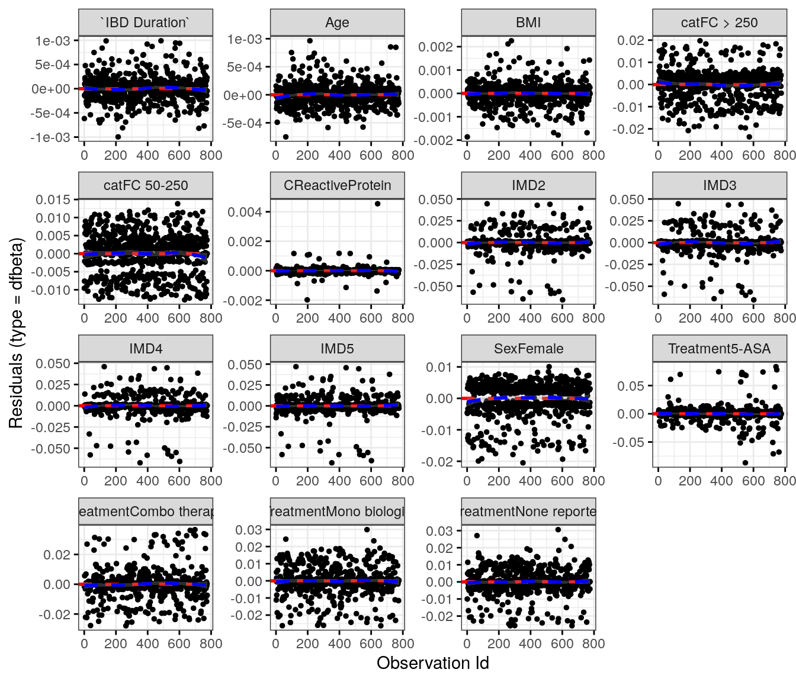
`geom_smooth()` using formula = 'y ~ x'
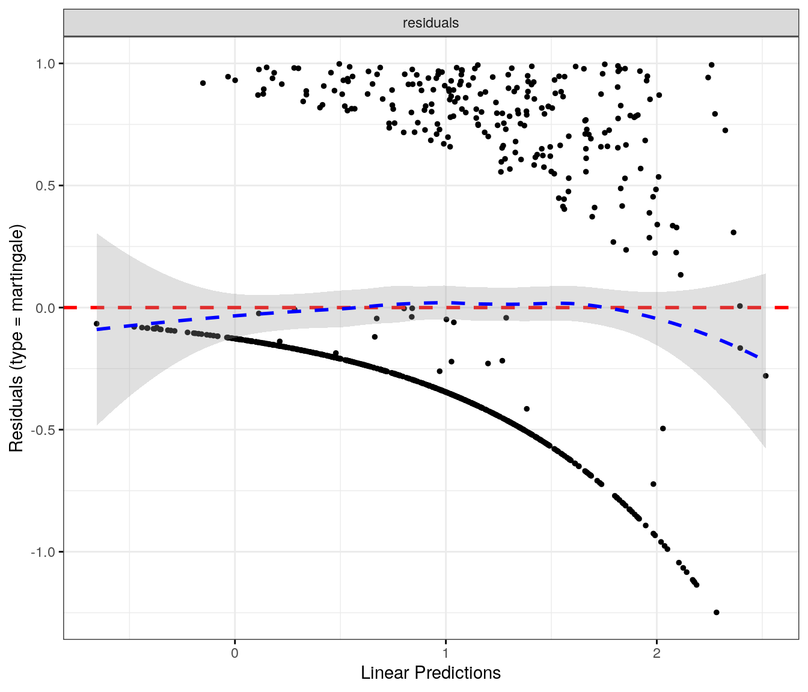
Haemoglobin
Code
fit.me<-coxph(Surv(softflare_time, softflare)~Sex+IMD+cat+`IBD Duration`+BMI+Treatment+Age+Haemoglobin+frailty(SiteNo), control =coxph.control(outer.max =20), data =flare.cd.df)invisible(cox_summary(fit.me))
Cox model summary:
Variable
HR
Lower 95%
Upper 95%
P-value
SexFemale
2.1597
1.5666
2.9775
0.0000
IMD2
1.0259
0.5960
1.7659
0.9265
IMD3
1.0234
0.5856
1.7886
0.9351
IMD4
1.1447
0.6724
1.9488
0.6187
IMD5
1.0682
0.6380
1.7884
0.8019
catFC 50-250
1.5057
1.1301
2.0063
0.0052
catFC > 250
2.2631
1.6365
3.1298
0.0000
IBD Duration
0.9955
0.9835
1.0077
0.4718
BMI
1.0222
0.9978
1.0472
0.0755
TreatmentMono biologic
1.0985
0.7527
1.6032
0.6261
TreatmentCombo therapy
0.7624
0.4819
1.2060
0.2463
Treatment5-ASA
1.2865
0.6827
2.4243
0.4358
TreatmentNone reported
1.0489
0.7352
1.4964
0.7925
Age
1.0017
0.9922
1.0113
0.7258
Haemoglobin
0.9915
0.9814
1.0018
0.1044
Proportional hazards assumption test
Chi-squared statistic
DF
P-value
Sex
0.7656
0.9922
0.3788
IMD
4.7397
3.9670
0.3107
cat
2.5886
1.9874
0.2718
IBD Duration
3.4103
0.9959
0.0644
BMI
3.9782
0.9949
0.0457
Treatment
3.9996
3.9264
0.3952
Age
0.7858
0.9948
0.3735
Haemoglobin
1.2319
0.9947
0.2655
GLOBAL
19.9851
17.9736
0.3321
`geom_smooth()` using formula = 'y ~ x'
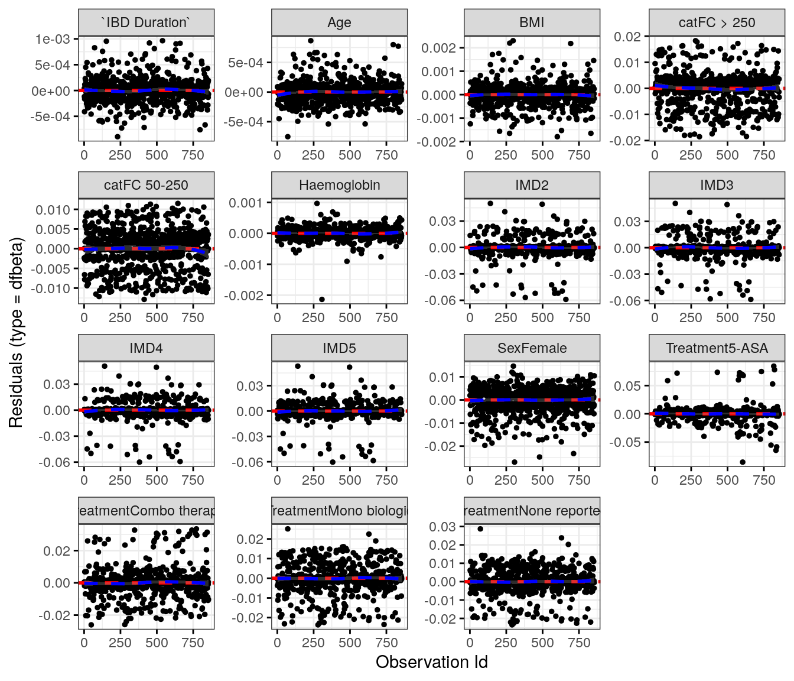
`geom_smooth()` using formula = 'y ~ x'
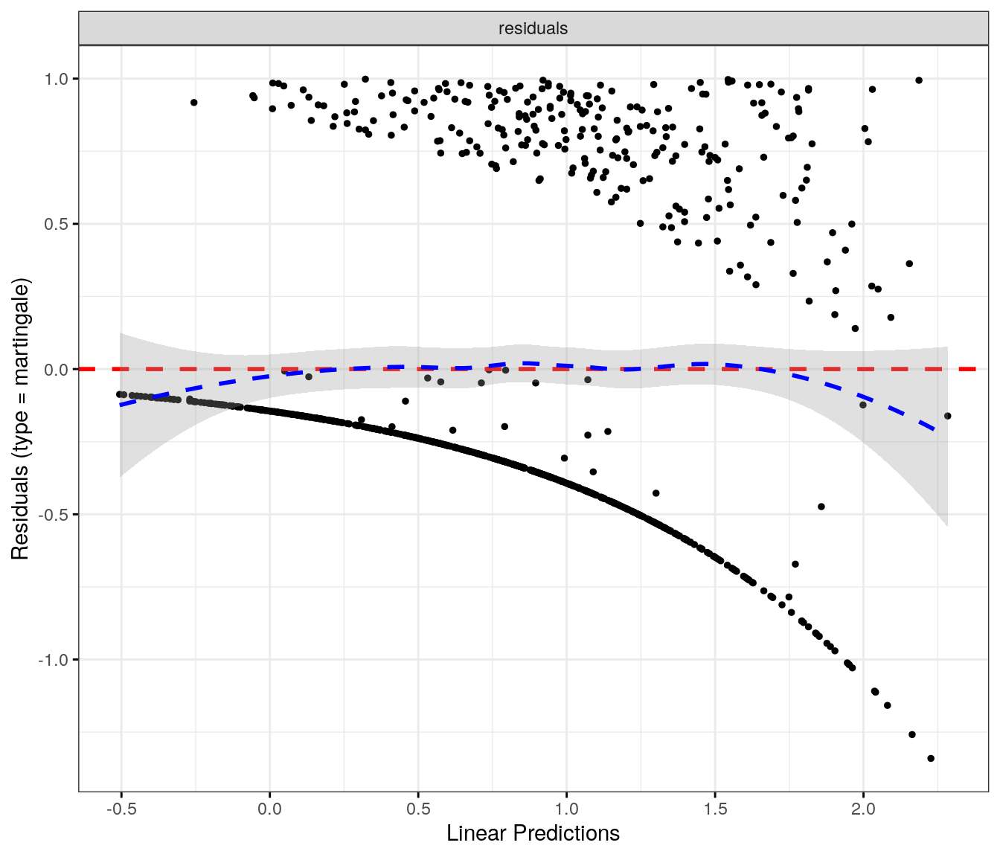
White cell count
Code
fit.me<-coxph(Surv(softflare_time, softflare)~Sex+IMD+cat+`IBD Duration`+BMI+Treatment+Age+WCC+frailty(SiteNo), control =coxph.control(outer.max =20), data =flare.cd.df)invisible(cox_summary(fit.me))
Cox model summary:
Variable
HR
Lower 95%
Upper 95%
P-value
SexFemale
2.4582
1.8550
3.2574
0.0000
IMD2
1.0346
0.6012
1.7807
0.9022
IMD3
1.0013
0.5728
1.7505
0.9964
IMD4
1.1351
0.6667
1.9326
0.6407
IMD5
1.0768
0.6431
1.8032
0.7784
catFC 50-250
1.5111
1.1335
2.0145
0.0049
catFC > 250
2.3572
1.7088
3.2516
0.0000
IBD Duration
0.9953
0.9833
1.0075
0.4499
BMI
1.0199
0.9956
1.0448
0.1097
TreatmentMono biologic
1.0885
0.7444
1.5916
0.6620
TreatmentCombo therapy
0.7724
0.4881
1.2223
0.2701
Treatment5-ASA
1.2253
0.6502
2.3092
0.5297
TreatmentNone reported
1.0393
0.7272
1.4855
0.8323
Age
1.0023
0.9927
1.0119
0.6404
WCC
0.9974
0.9537
1.0431
0.9095
Proportional hazards assumption test
Chi-squared statistic
DF
P-value
Sex
0.7886
0.9942
0.3725
IMD
4.6795
3.9666
0.3174
cat
2.5678
1.9881
0.2748
IBD Duration
3.5210
0.9964
0.0603
BMI
4.0258
0.9950
0.0445
Treatment
4.0799
3.9290
0.3850
Age
0.8093
0.9951
0.3666
WCC
0.8075
0.9956
0.3673
GLOBAL
20.8247
17.8669
0.2809
`geom_smooth()` using formula = 'y ~ x'
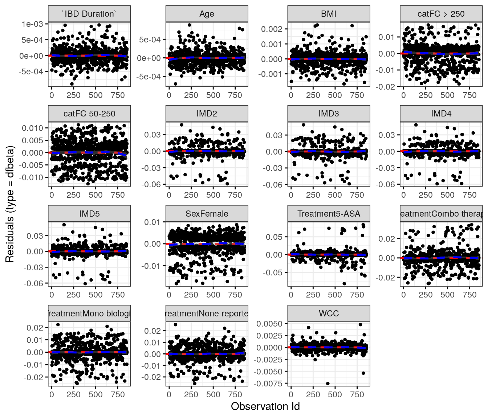
`geom_smooth()` using formula = 'y ~ x'
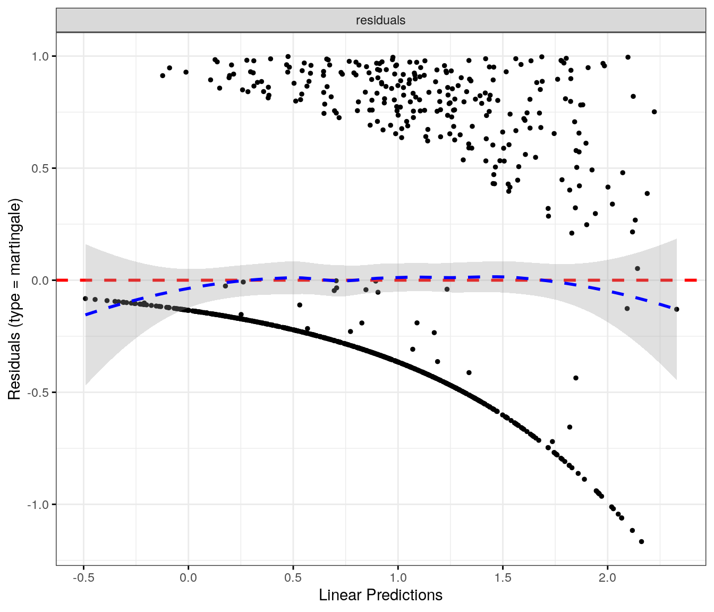
Platelets
Code
fit.me<-coxph(Surv(softflare_time, softflare)~Sex+IMD+cat+`IBD Duration`+BMI+Treatment+Age+Platelets+frailty(SiteNo), control =coxph.control(outer.max =20), data =flare.cd.df)invisible(cox_summary(fit.me))
Cox model summary:
Variable
HR
Lower 95%
Upper 95%
P-value
SexFemale
2.4111
1.8051
3.2205
0.0000
IMD2
1.0358
0.6016
1.7832
0.8991
IMD3
0.9909
0.5668
1.7321
0.9743
IMD4
1.1281
0.6625
1.9211
0.6572
IMD5
1.0707
0.6392
1.7935
0.7953
catFC 50-250
1.5006
1.1261
1.9996
0.0056
catFC > 250
2.3071
1.6638
3.1991
0.0000
IBD Duration
0.9955
0.9834
1.0077
0.4677
BMI
1.0193
0.9950
1.0442
0.1205
TreatmentMono biologic
1.0943
0.7504
1.5958
0.6396
TreatmentCombo therapy
0.7712
0.4878
1.2191
0.2661
Treatment5-ASA
1.2113
0.6438
2.2793
0.5522
TreatmentNone reported
1.0409
0.7298
1.4847
0.8247
Age
1.0027
0.9931
1.0125
0.5805
Platelets
1.0005
0.9988
1.0022
0.5775
Proportional hazards assumption test
Chi-squared statistic
DF
P-value
Sex
0.7853
0.9954
0.3739
IMD
4.7137
3.9681
0.3138
cat
2.5936
1.9885
0.2713
IBD Duration
3.5158
0.9965
0.0605
BMI
4.0297
0.9950
0.0444
Treatment
4.0671
3.9330
0.3872
Age
0.7788
0.9958
0.3760
Platelets
1.8028
0.9945
0.1782
GLOBAL
21.6810
17.6807
0.2302
`geom_smooth()` using formula = 'y ~ x'
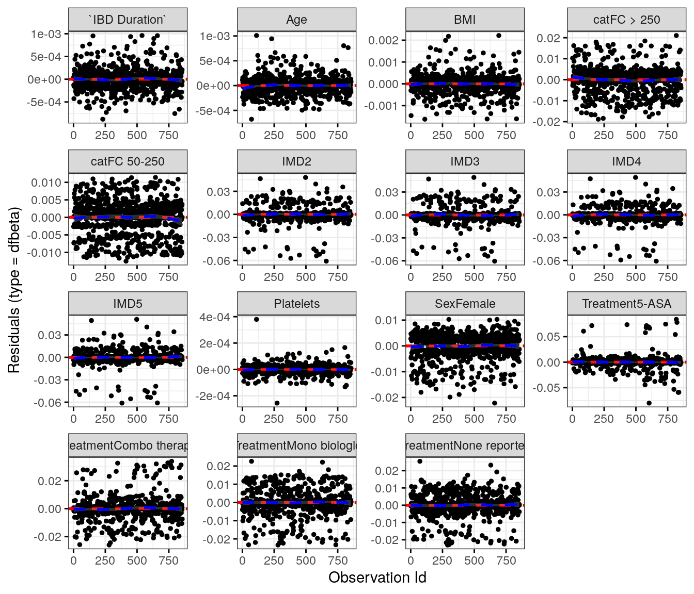
`geom_smooth()` using formula = 'y ~ x'
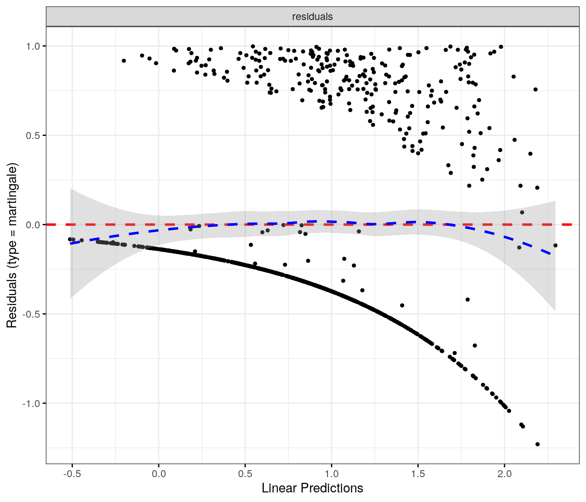
Albumin
Code
fit.me<-coxph(Surv(softflare_time, softflare)~Sex+IMD+cat+`IBD Duration`+BMI+Treatment+Age+Albumin+frailty(SiteNo), control =coxph.control(outer.max =20), data =flare.cd.df)invisible(cox_summary(fit.me))
Cox model summary:
Variable
HR
Lower 95%
Upper 95%
P-value
SexFemale
2.4223
1.8119
3.2382
0.0000
IMD2
1.0815
0.6202
1.8859
0.7824
IMD3
1.0549
0.5959
1.8675
0.8544
IMD4
1.1648
0.6755
2.0088
0.5831
IMD5
1.0816
0.6366
1.8375
0.7719
catFC 50-250
1.5522
1.1568
2.0826
0.0034
catFC > 250
2.1298
1.5104
3.0033
0.0000
IBD Duration
0.9934
0.9813
1.0058
0.2958
BMI
1.0158
0.9909
1.0413
0.2154
TreatmentMono biologic
1.0781
0.7318
1.5883
0.7035
TreatmentCombo therapy
0.7625
0.4757
1.2223
0.2601
Treatment5-ASA
1.2974
0.6819
2.4687
0.4276
TreatmentNone reported
1.0413
0.7238
1.4981
0.8272
Age
1.0049
0.9950
1.0148
0.3357
Albumin
0.9742
0.9428
1.0066
0.1168
Proportional hazards assumption test
Chi-squared statistic
DF
P-value
Sex
1.0516
1.0000
0.3051
IMD
4.3697
4.0000
0.3583
cat
4.4235
2.0000
0.1095
IBD Duration
3.1653
1.0000
0.0752
BMI
2.6329
1.0000
0.1047
Treatment
4.1227
4.0000
0.3897
Age
0.3211
1.0000
0.5709
Albumin
0.7032
1.0000
0.4017
GLOBAL
19.8301
15.0001
0.1786
`geom_smooth()` using formula = 'y ~ x'
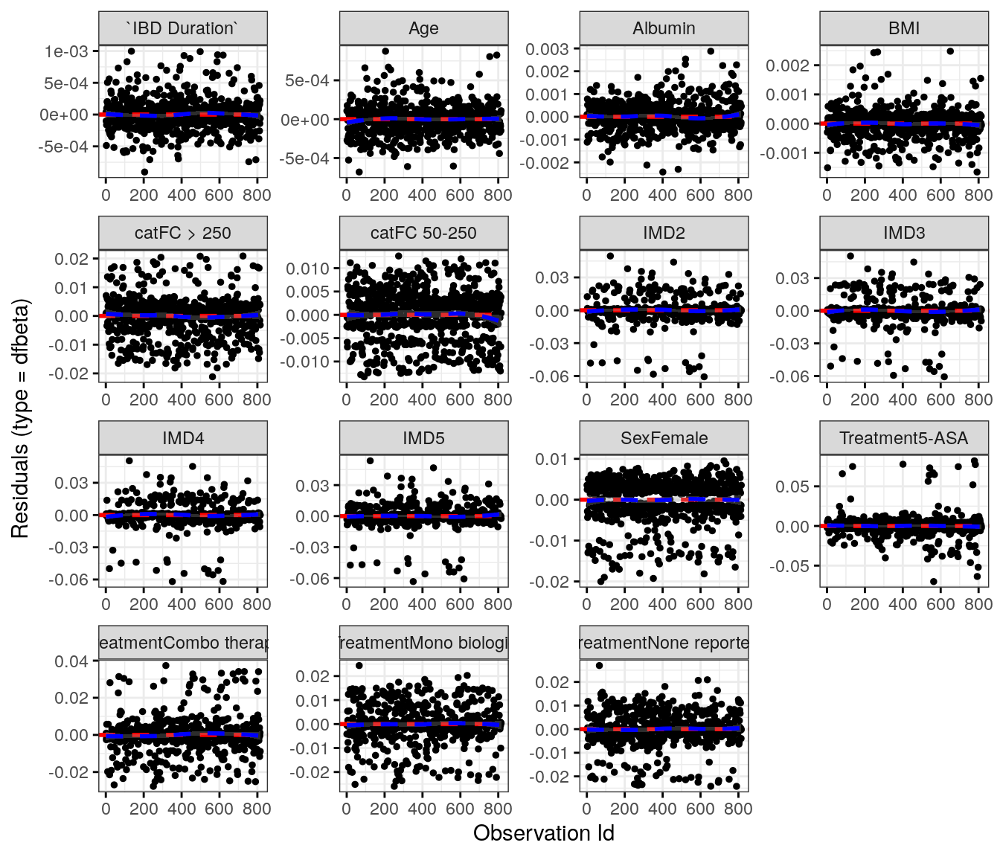
`geom_smooth()` using formula = 'y ~ x'
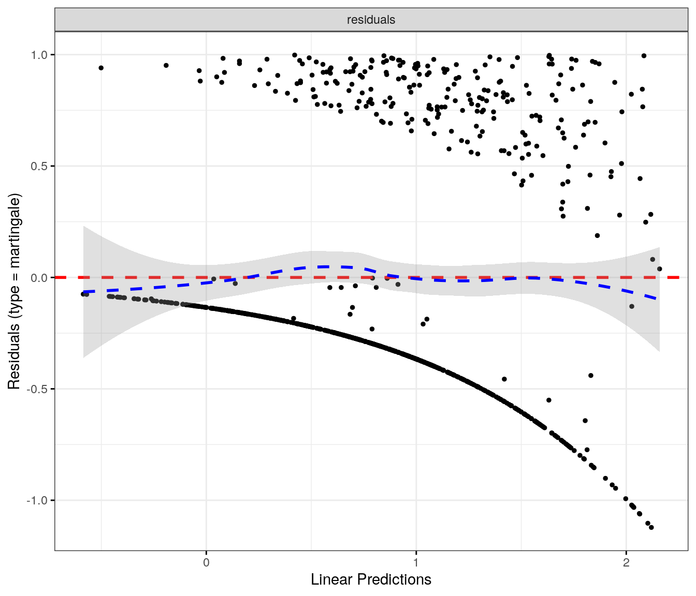
Objective flare
C-reactive protein
Code
fit.me<-coxph(Surv(hardflare_time, hardflare)~Sex+IMD+cat+`IBD Duration`+BMI+Treatment+Age+CReactiveProtein+frailty(SiteNo), control =coxph.control(outer.max =20), data =flare.cd.df)invisible(cox_summary(fit.me))
Cox model summary:
Variable
HR
Lower 95%
Upper 95%
P-value
SexFemale
1.8009
1.2824
2.5291
0.0007
IMD2
1.2982
0.6151
2.7400
0.4935
IMD3
1.1456
0.5291
2.4807
0.7302
IMD4
1.3636
0.6493
2.8636
0.4127
IMD5
1.5807
0.7763
3.2184
0.2069
catFC 50-250
1.9148
1.3007
2.8189
0.0010
catFC > 250
3.0442
2.0116
4.6068
0.0000
IBD Duration
0.9875
0.9711
1.0042
0.1425
BMI
1.0150
0.9836
1.0474
0.3528
TreatmentMono biologic
0.9277
0.5912
1.4556
0.7439
TreatmentCombo therapy
0.5426
0.3015
0.9764
0.0414
Treatment5-ASA
1.2132
0.5261
2.7974
0.6503
TreatmentNone reported
0.6823
0.4395
1.0592
0.0884
Age
0.9894
0.9775
1.0014
0.0831
CReactiveProtein
1.0079
0.9989
1.0170
0.0868
Proportional hazards assumption test
Chi-squared statistic
DF
P-value
Sex
3.3788
0.9933
0.0654
IMD
1.4745
3.9766
0.8285
cat
6.6521
1.9943
0.0357
IBD Duration
0.5193
0.9984
0.4705
BMI
0.5636
0.9973
0.4518
Treatment
3.7682
3.9447
0.4299
Age
4.2899
0.9986
0.0383
CReactiveProtein
2.5542
0.9967
0.1095
GLOBAL
24.5659
16.5537
0.0921
`geom_smooth()` using formula = 'y ~ x'
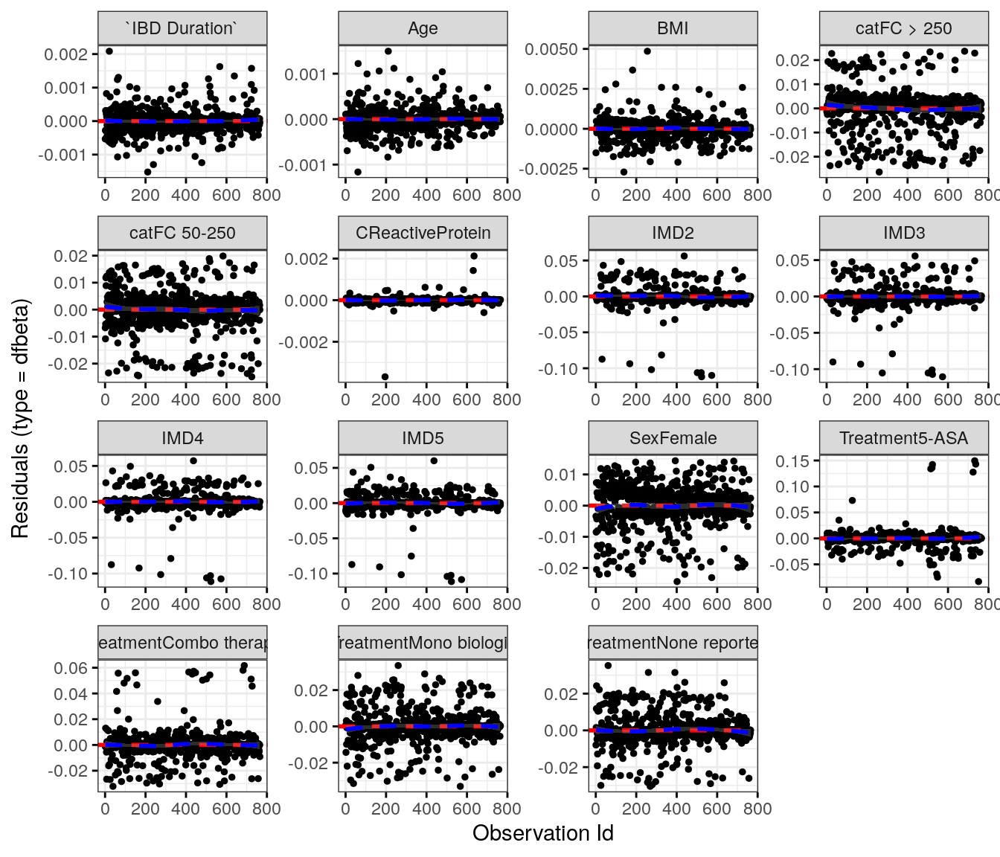
`geom_smooth()` using formula = 'y ~ x'
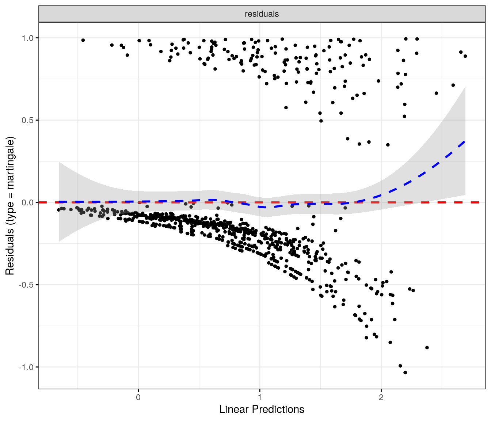
Haemoglobin
Code
fit.me<-coxph(Surv(hardflare_time, hardflare)~Sex+IMD+cat+`IBD Duration`+BMI+Treatment+Age+Haemoglobin+frailty(SiteNo), control =coxph.control(outer.max =20), data =flare.cd.df)invisible(cox_summary(fit.me))
Cox model summary:
Variable
HR
Lower 95%
Upper 95%
P-value
SexFemale
1.6362
1.1086
2.4150
0.0132
IMD2
1.1011
0.5521
2.1957
0.7845
IMD3
1.0211
0.4986
2.0911
0.9545
IMD4
1.1355
0.5706
2.2596
0.7175
IMD5
1.2666
0.6581
2.4377
0.4792
catFC 50-250
2.0028
1.3772
2.9125
0.0003
catFC > 250
3.4633
2.3126
5.1866
0.0000
IBD Duration
0.9831
0.9669
0.9996
0.0442
BMI
1.0186
0.9874
1.0507
0.2454
TreatmentMono biologic
1.0278
0.6616
1.5967
0.9029
TreatmentCombo therapy
0.6058
0.3435
1.0684
0.0834
Treatment5-ASA
1.3132
0.5601
3.0791
0.5309
TreatmentNone reported
0.7177
0.4661
1.1050
0.1320
Age
0.9874
0.9758
0.9991
0.0347
Haemoglobin
0.9948
0.9819
1.0079
0.4365
Proportional hazards assumption test
Chi-squared statistic
DF
P-value
Sex
2.7311
0.9825
0.0961
IMD
1.5024
3.9512
0.8206
cat
8.0023
1.9856
0.0180
IBD Duration
0.5793
0.9951
0.4447
BMI
0.6984
0.9922
0.4004
Treatment
3.7108
3.8784
0.4281
Age
4.1839
0.9936
0.0404
Haemoglobin
3.3939
0.9924
0.0647
GLOBAL
24.5533
20.9027
0.2622
`geom_smooth()` using formula = 'y ~ x'
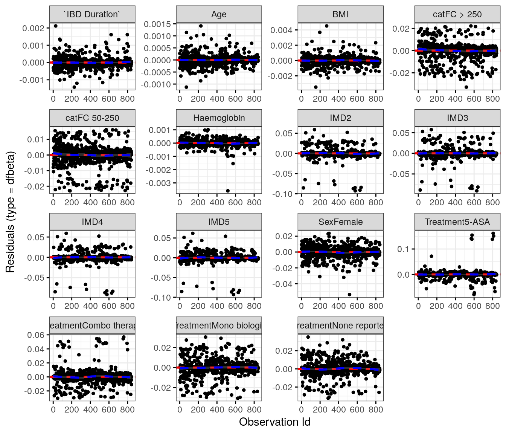
`geom_smooth()` using formula = 'y ~ x'
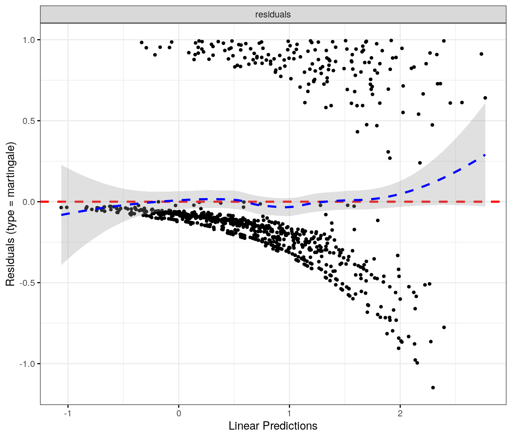
White cell count
Code
fit.me<-coxph(Surv(hardflare_time, hardflare)~Sex+IMD+cat+`IBD Duration`+BMI+Treatment+Age+WCC+frailty(SiteNo), control =coxph.control(outer.max =20), data =flare.cd.df)invisible(cox_summary(fit.me))
Cox model summary:
Variable
HR
Lower 95%
Upper 95%
P-value
SexFemale
1.7502
1.2575
2.4359
0.0009
IMD2
1.0977
0.5504
2.1895
0.7912
IMD3
0.9946
0.4858
2.0365
0.9882
IMD4
1.1361
0.5709
2.2607
0.7163
IMD5
1.2736
0.6618
2.4509
0.4690
catFC 50-250
1.9979
1.3735
2.9063
0.0003
catFC > 250
3.4956
2.3395
5.2231
0.0000
IBD Duration
0.9833
0.9671
0.9998
0.0477
BMI
1.0158
0.9851
1.0475
0.3155
TreatmentMono biologic
0.9958
0.6401
1.5493
0.9851
TreatmentCombo therapy
0.5987
0.3388
1.0581
0.0775
Treatment5-ASA
1.2362
0.5277
2.8958
0.6255
TreatmentNone reported
0.6974
0.4529
1.0740
0.1019
Age
0.9879
0.9764
0.9995
0.0414
WCC
1.0276
0.9739
1.0843
0.3197
Proportional hazards assumption test
Chi-squared statistic
DF
P-value
Sex
2.6902
0.9856
0.0990
IMD
1.4300
3.9504
0.8335
cat
8.0723
1.9857
0.0174
IBD Duration
0.5879
0.9955
0.4415
BMI
0.6962
0.9918
0.4010
Treatment
3.7116
3.8780
0.4279
Age
4.2743
0.9935
0.0383
WCC
3.7589
0.9883
0.0516
GLOBAL
26.5752
20.9009
0.1814
`geom_smooth()` using formula = 'y ~ x'
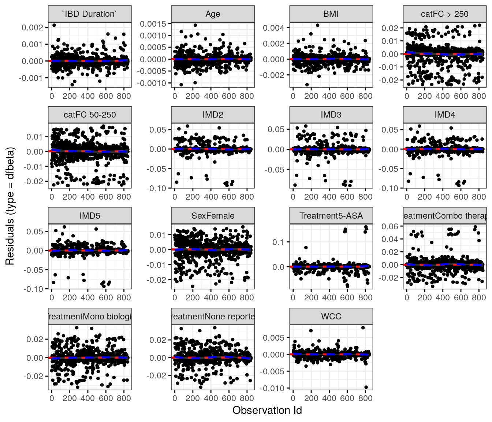
`geom_smooth()` using formula = 'y ~ x'
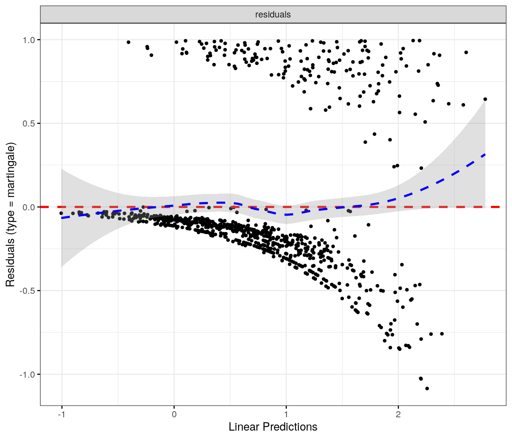
Platelets
Code
fit.me<-coxph(Surv(hardflare_time, hardflare)~Sex+IMD+cat+`IBD Duration`+BMI+Treatment+Age+Platelets+frailty(SiteNo), control =coxph.control(outer.max =20), data =flare.cd.df)invisible(cox_summary(fit.me))
Cox model summary:
Variable
HR
Lower 95%
Upper 95%
P-value
SexFemale
1.7384
1.2340
2.4491
0.0016
IMD2
1.0967
0.5496
2.1885
0.7933
IMD3
0.9943
0.4856
2.0362
0.9876
IMD4
1.1219
0.5637
2.2331
0.7432
IMD5
1.2584
0.6535
2.4231
0.4918
catFC 50-250
1.9963
1.3714
2.9061
0.0003
catFC > 250
3.4689
2.3069
5.2163
0.0000
IBD Duration
0.9831
0.9669
0.9996
0.0448
BMI
1.0162
0.9855
1.0478
0.3055
TreatmentMono biologic
1.0226
0.6589
1.5868
0.9207
TreatmentCombo therapy
0.6081
0.3449
1.0724
0.0857
Treatment5-ASA
1.2552
0.5363
2.9376
0.6004
TreatmentNone reported
0.7108
0.4622
1.0931
0.1200
Age
0.9881
0.9765
0.9998
0.0458
Platelets
1.0005
0.9985
1.0025
0.6412
Proportional hazards assumption test
Chi-squared statistic
DF
P-value
Sex
2.7275
0.9878
0.0970
IMD
1.4720
3.9507
0.8260
cat
7.9710
1.9855
0.0183
IBD Duration
0.6017
0.9954
0.4361
BMI
0.6526
0.9916
0.4160
Treatment
3.7113
3.8794
0.4281
Age
4.1367
0.9938
0.0416
Platelets
0.4746
0.9931
0.4881
GLOBAL
23.3913
20.9178
0.3189
`geom_smooth()` using formula = 'y ~ x'
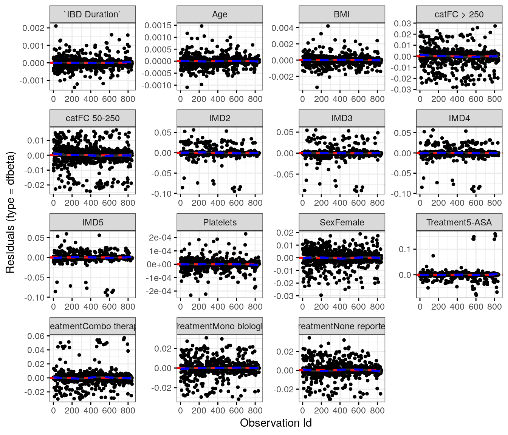
`geom_smooth()` using formula = 'y ~ x'
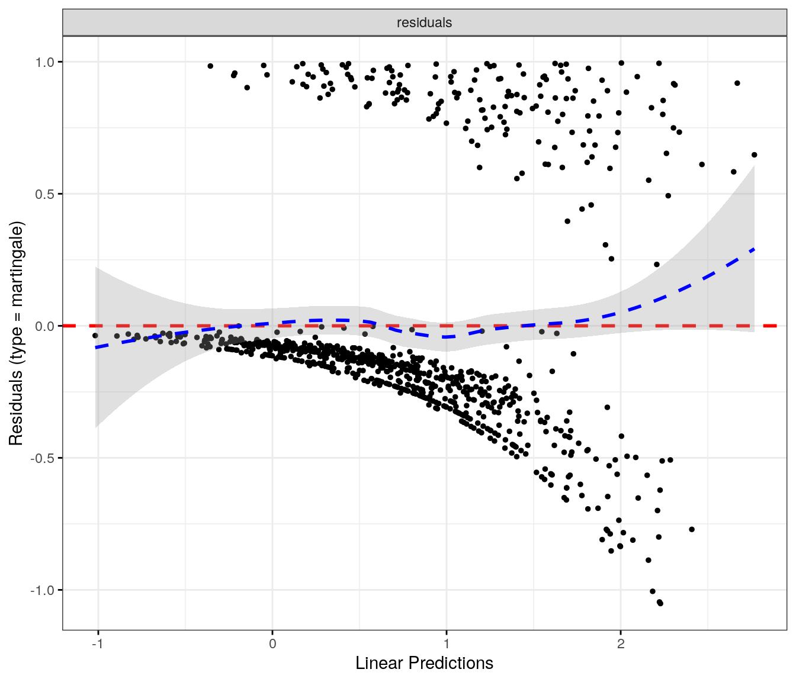
Albumin
Code
fit.me<-coxph(Surv(hardflare_time, hardflare)~Sex+IMD+cat+`IBD Duration`+BMI+Treatment+Age+Albumin+frailty(SiteNo), control =coxph.control(outer.max =20), data =flare.cd.df)invisible(cox_summary(fit.me))
Cox model summary:
Variable
HR
Lower 95%
Upper 95%
P-value
SexFemale
1.8278
1.2965
2.5769
0.0006
IMD2
1.0933
0.5464
2.1877
0.8010
IMD3
0.8936
0.4299
1.8577
0.7632
IMD4
1.0527
0.5257
2.1082
0.8847
IMD5
1.1676
0.6016
2.2662
0.6469
catFC 50-250
2.0575
1.4021
3.0193
0.0002
catFC > 250
3.2613
2.1172
5.0237
0.0000
IBD Duration
0.9857
0.9693
1.0024
0.0929
BMI
1.0151
0.9835
1.0477
0.3539
TreatmentMono biologic
1.0019
0.6377
1.5741
0.9935
TreatmentCombo therapy
0.5399
0.2978
0.9788
0.0423
Treatment5-ASA
1.1465
0.4843
2.7141
0.7558
TreatmentNone reported
0.6538
0.4192
1.0197
0.0609
Age
0.9895
0.9774
1.0018
0.0939
Albumin
1.0190
0.9740
1.0660
0.4136
Proportional hazards assumption test
Chi-squared statistic
DF
P-value
Sex
3.1349
0.9861
0.0751
IMD
2.8274
3.9536
0.5798
cat
7.3567
1.9863
0.0249
IBD Duration
0.4475
0.9961
0.5019
BMI
1.0279
0.9916
0.3080
Treatment
3.6720
3.8938
0.4360
Age
2.7182
0.9894
0.0978
Albumin
2.4245
0.8954
0.1035
GLOBAL
24.6183
20.1272
0.2222
`geom_smooth()` using formula = 'y ~ x'
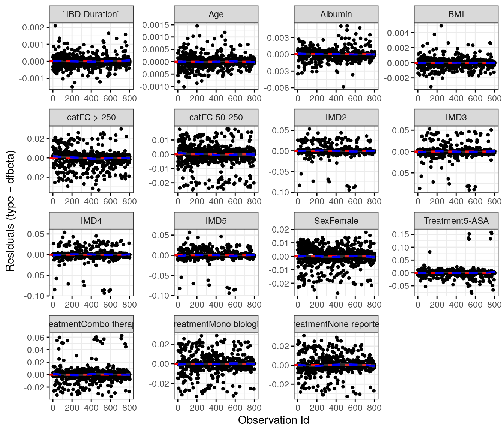
`geom_smooth()` using formula = 'y ~ x'
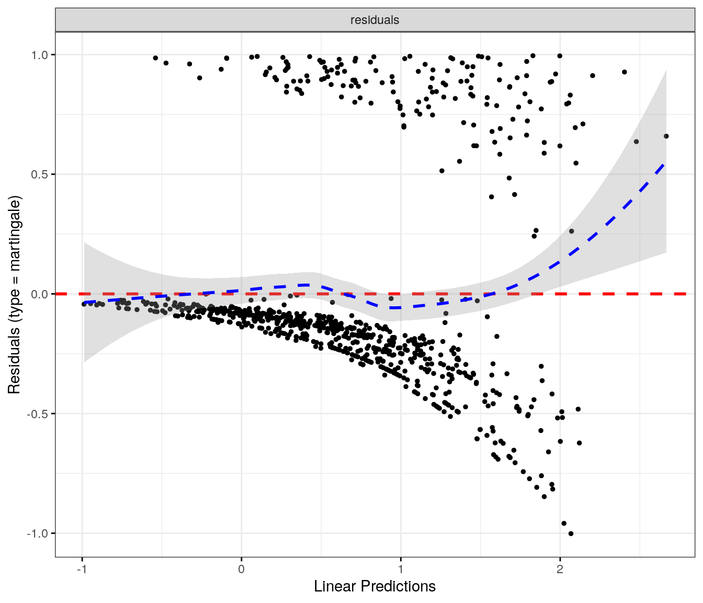
Ulcerative colitis
Patient-reported flare
C-reactive protein
Code
fit.me<-coxph(Surv(softflare_time, softflare)~Sex+IMD+cat+`IBD Duration`+BMI+Treatment+Age+CReactiveProtein+frailty(SiteNo), control =coxph.control(outer.max =20), data =flare.uc.df)invisible(cox_summary(fit.me))
Cox model summary:
Variable
HR
Lower 95%
Upper 95%
P-value
SexFemale
1.5884
1.2280
2.0545
0.0004
IMD2
1.2122
0.7052
2.0835
0.4863
IMD3
0.9269
0.5411
1.5877
0.7821
IMD4
1.3318
0.8017
2.2125
0.2686
IMD5
1.0119
0.6126
1.6714
0.9633
catFC 50-250
1.6716
1.2434
2.2473
0.0007
catFC > 250
2.2180
1.6193
3.0381
0.0000
IBD Duration
0.9930
0.9790
1.0071
0.3278
BMI
0.9853
0.9607
1.0106
0.2531
TreatmentMono biologic
0.8830
0.5427
1.4365
0.6162
TreatmentCombo therapy
0.6591
0.3475
1.2501
0.2018
Treatment5-ASA
1.4834
1.0029
2.1941
0.0483
TreatmentNone reported
1.3374
0.8983
1.9911
0.1522
Age
0.9941
0.9844
1.0038
0.2312
CReactiveProtein
1.0042
0.9889
1.0198
0.5937
Proportional hazards assumption test
Chi-squared statistic
DF
P-value
Sex
2.4489
0.9872
0.1156
IMD
1.9479
3.9295
0.7356
cat
4.1711
1.9631
0.1205
IBD Duration
0.2523
0.9781
0.6062
BMI
1.1961
0.9835
0.2692
Treatment
7.9469
3.8538
0.0856
Age
0.0372
0.9642
0.8357
CReactiveProtein
5.8082
0.9858
0.0156
GLOBAL
24.0490
25.0397
0.5188
`geom_smooth()` using formula = 'y ~ x'
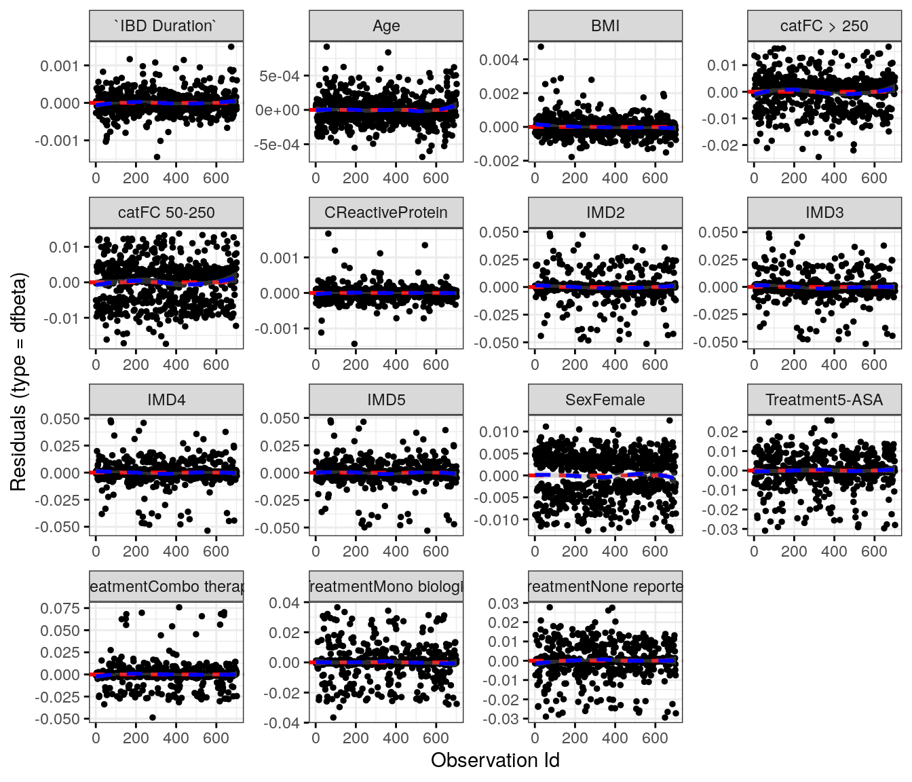
`geom_smooth()` using formula = 'y ~ x'
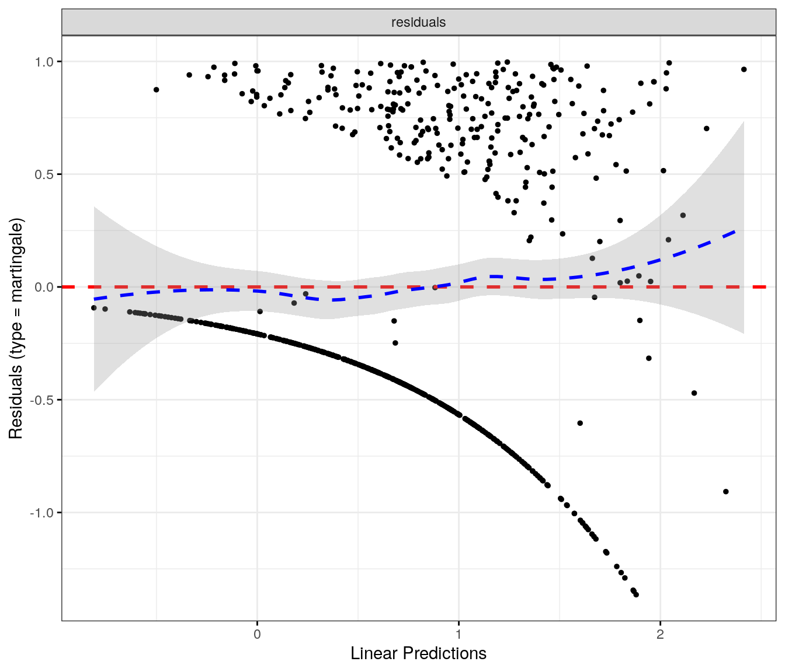
Haemoglobin
Code
fit.me<-coxph(Surv(softflare_time, softflare)~Sex+IMD+cat+`IBD Duration`+BMI+Treatment+Age+Haemoglobin+frailty(SiteNo), control =coxph.control(outer.max =20), data =flare.uc.df)invisible(cox_summary(fit.me))
Cox model summary:
Variable
HR
Lower 95%
Upper 95%
P-value
SexFemale
1.2212
0.8988
1.6593
0.2014
IMD2
1.2158
0.7299
2.0254
0.4529
IMD3
0.8262
0.4939
1.3822
0.4672
IMD4
1.0870
0.6679
1.7693
0.7370
IMD5
1.0451
0.6501
1.6801
0.8554
catFC 50-250
1.7626
1.3163
2.3603
0.0001
catFC > 250
2.2369
1.6398
3.0512
0.0000
IBD Duration
0.9914
0.9777
1.0053
0.2234
BMI
0.9881
0.9636
1.0132
0.3497
TreatmentMono biologic
0.9040
0.5631
1.4515
0.6762
TreatmentCombo therapy
0.6827
0.3620
1.2874
0.2382
Treatment5-ASA
1.5491
1.0584
2.2674
0.0243
TreatmentNone reported
1.3208
0.8958
1.9475
0.1601
Age
0.9922
0.9827
1.0018
0.1097
Haemoglobin
0.9841
0.9726
0.9957
0.0075
Proportional hazards assumption test
Chi-squared statistic
DF
P-value
Sex
1.5625
0.9825
0.2070
IMD
3.6344
3.9262
0.4464
cat
5.5826
1.9625
0.0592
IBD Duration
0.7479
0.9798
0.3798
BMI
1.5887
0.9774
0.2021
Treatment
7.3278
3.8500
0.1096
Age
0.0264
0.9622
0.8598
Haemoglobin
0.0066
0.9766
0.9308
GLOBAL
20.7310
25.6975
0.7417
`geom_smooth()` using formula = 'y ~ x'
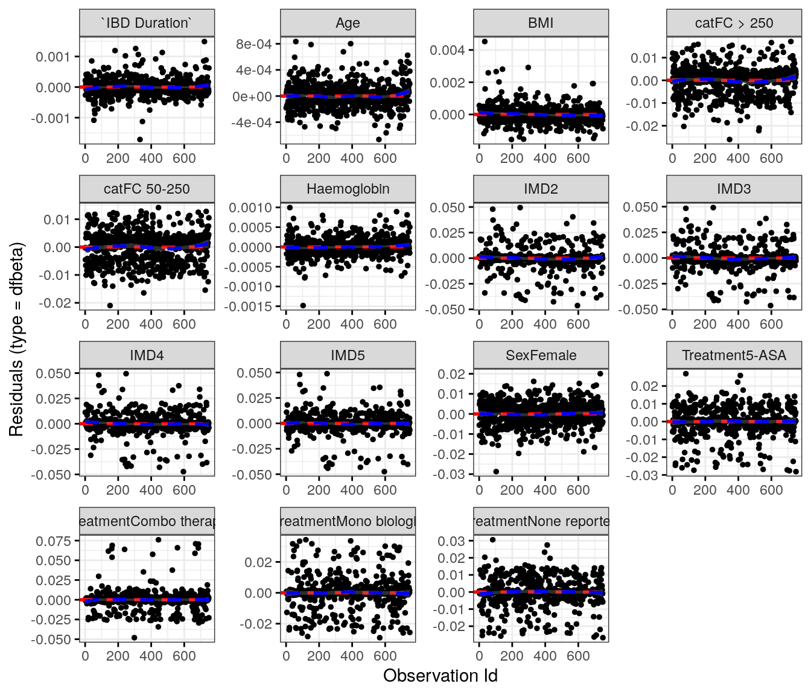
`geom_smooth()` using formula = 'y ~ x'
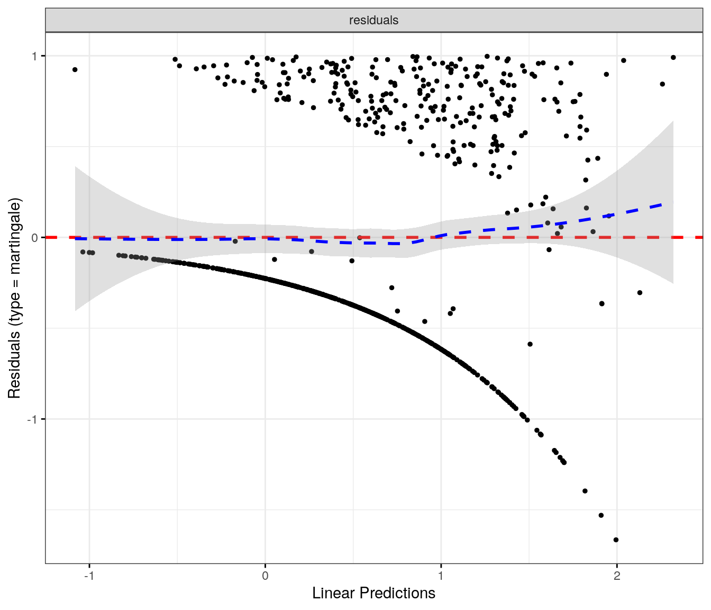
White cell count
Code
fit.me<-coxph(Surv(softflare_time, softflare)~Sex+IMD+cat+`IBD Duration`+BMI+Treatment+Age+WCC+frailty(SiteNo), control =coxph.control(outer.max =20), data =flare.uc.df)invisible(cox_summary(fit.me))
Cox model summary:
Variable
HR
Lower 95%
Upper 95%
P-value
SexFemale
1.5619
1.2129
2.0113
0.0005
IMD2
1.2368
0.7417
2.0624
0.4153
IMD3
0.8270
0.4952
1.3812
0.4679
IMD4
1.0515
0.6468
1.7093
0.8396
IMD5
1.0026
0.6251
1.6079
0.9916
catFC 50-250
1.7380
1.2958
2.3312
0.0002
catFC > 250
2.1789
1.5924
2.9815
0.0000
IBD Duration
0.9915
0.9776
1.0055
0.2319
BMI
0.9762
0.9517
1.0014
0.0639
TreatmentMono biologic
0.8061
0.5009
1.2972
0.3746
TreatmentCombo therapy
0.6372
0.3380
1.2011
0.1635
Treatment5-ASA
1.2605
0.8532
1.8624
0.2450
TreatmentNone reported
1.1027
0.7415
1.6397
0.6293
Age
0.9946
0.9849
1.0043
0.2731
WCC
1.1121
1.0404
1.1887
0.0018
Proportional hazards assumption test
Chi-squared statistic
DF
P-value
Sex
1.5998
0.9861
0.2026
IMD
3.3195
3.9300
0.4949
cat
5.2289
1.9633
0.0708
IBD Duration
0.5297
0.9809
0.4592
BMI
1.3185
0.9781
0.2448
Treatment
7.1686
3.8575
0.1173
Age
0.0016
0.9689
0.9639
WCC
0.1649
0.9865
0.6792
GLOBAL
18.7212
24.9537
0.8084
`geom_smooth()` using formula = 'y ~ x'
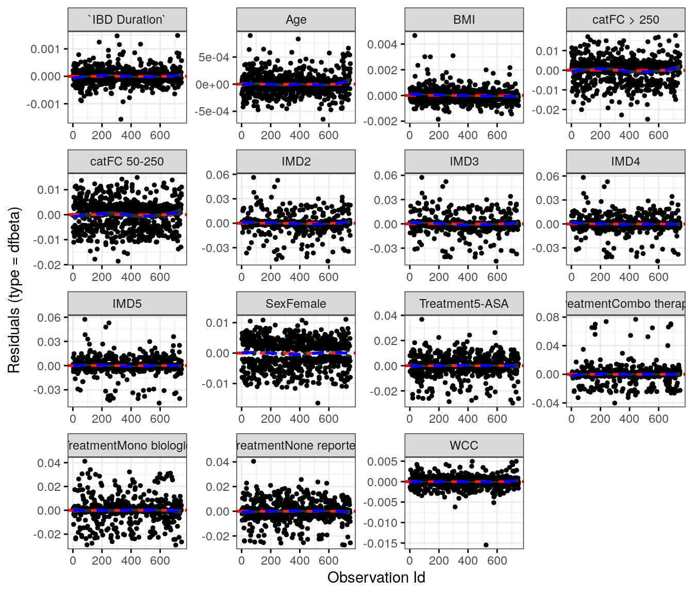
`geom_smooth()` using formula = 'y ~ x'
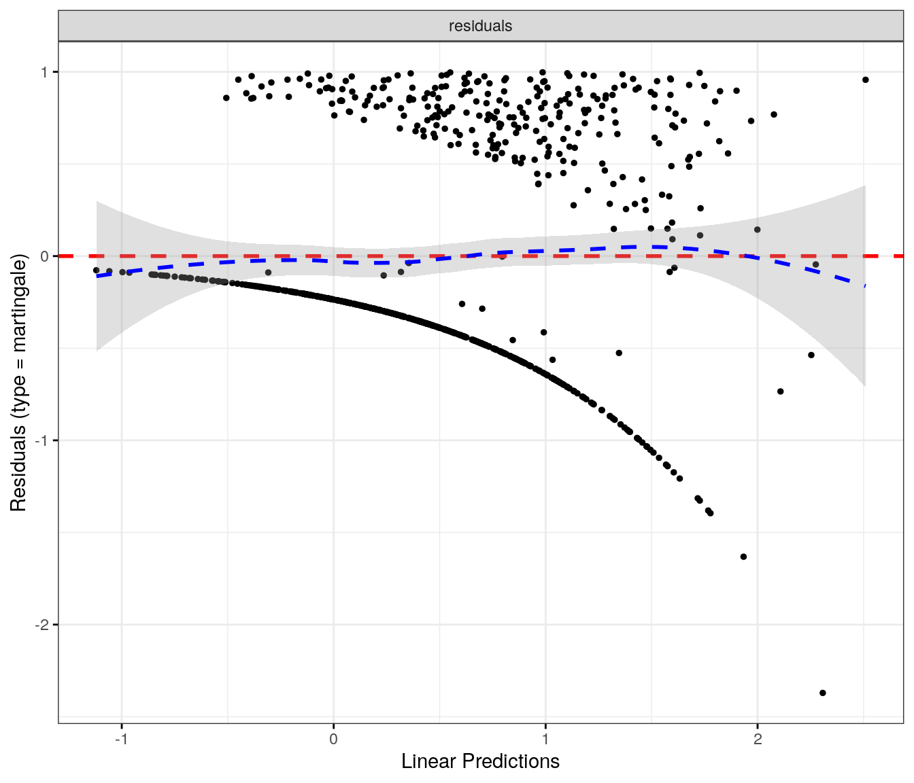
Platelets
Code
fit.me<-coxph(Surv(softflare_time, softflare)~Sex+IMD+cat+`IBD Duration`+BMI+Treatment+Age+Platelets+frailty(SiteNo), control =coxph.control(outer.max =20), data =flare.uc.df)invisible(cox_summary(fit.me))
Cox model summary:
Variable
HR
Lower 95%
Upper 95%
P-value
SexFemale
1.5951
1.2326
2.0643
0.0004
IMD2
1.1802
0.7088
1.9653
0.5242
IMD3
0.8286
0.4956
1.3854
0.4735
IMD4
1.0665
0.6564
1.7328
0.7947
IMD5
0.9915
0.6188
1.5886
0.9715
catFC 50-250
1.8077
1.3477
2.4247
0.0001
catFC > 250
2.3952
1.7567
3.2657
0.0000
IBD Duration
0.9931
0.9794
1.0070
0.3287
BMI
0.9828
0.9586
1.0077
0.1736
TreatmentMono biologic
0.9082
0.5666
1.4558
0.6891
TreatmentCombo therapy
0.6641
0.3523
1.2518
0.2057
Treatment5-ASA
1.5019
1.0284
2.1935
0.0353
TreatmentNone reported
1.2726
0.8633
1.8758
0.2234
Age
0.9924
0.9829
1.0020
0.1218
Platelets
0.9993
0.9974
1.0012
0.4961
Proportional hazards assumption test
Chi-squared statistic
DF
P-value
Sex
1.4531
0.9846
0.2240
IMD
3.5679
3.9306
0.4570
cat
5.5454
1.9643
0.0604
IBD Duration
0.8621
0.9807
0.3465
BMI
1.7223
0.9790
0.1847
Treatment
7.3289
3.8532
0.1097
Age
0.0070
0.9651
0.9264
Platelets
0.6136
0.9833
0.4270
GLOBAL
20.3604
25.3193
0.7431
`geom_smooth()` using formula = 'y ~ x'
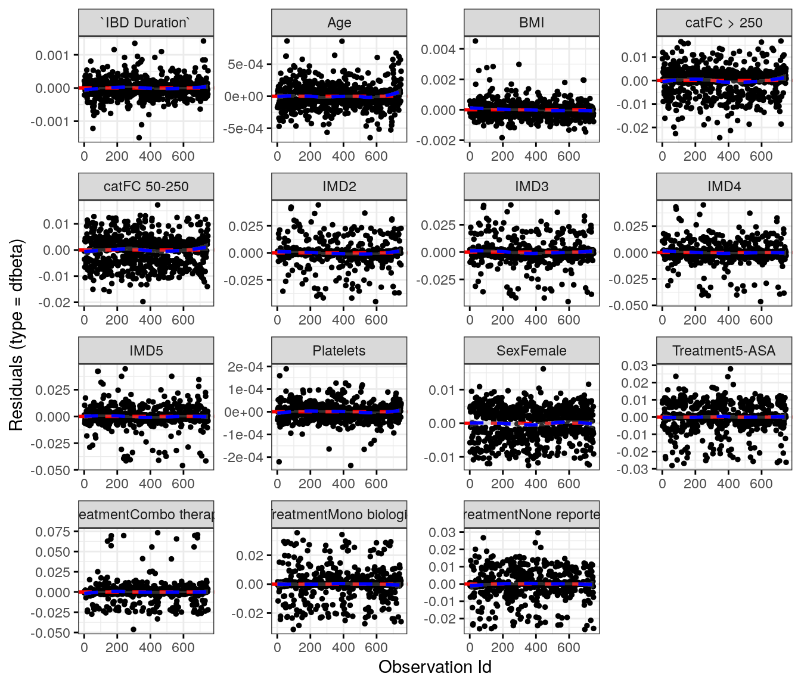
`geom_smooth()` using formula = 'y ~ x'
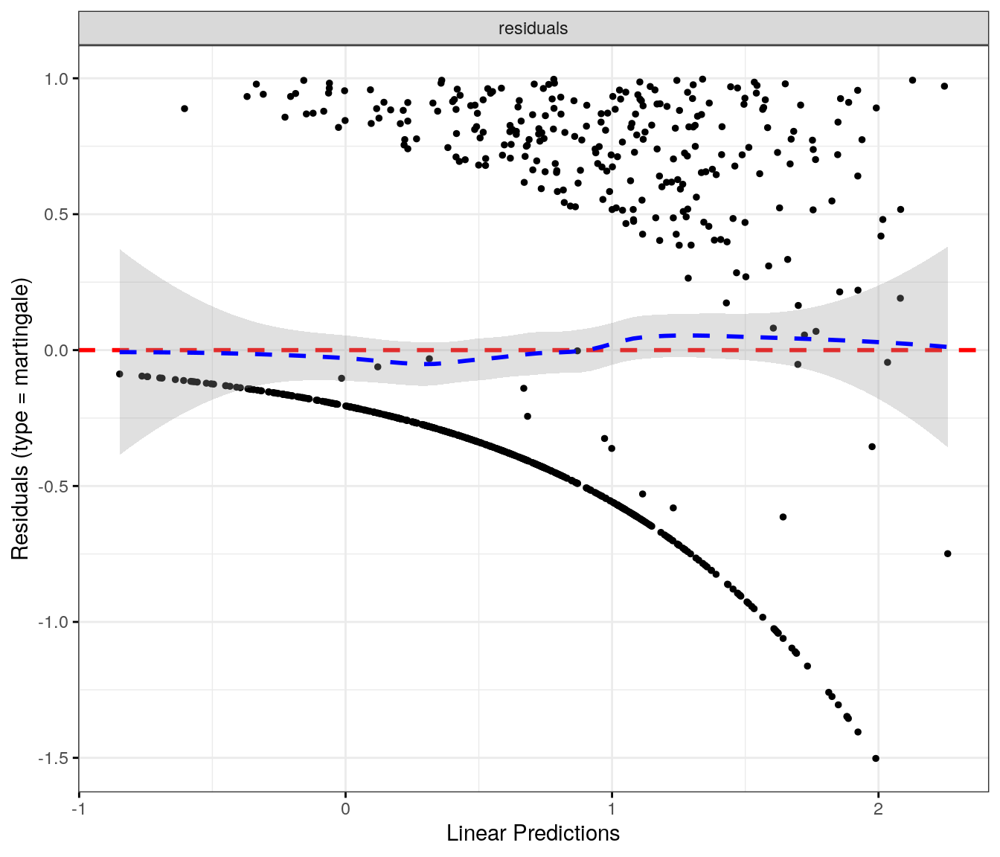
Albumin
Code
fit.me<-coxph(Surv(softflare_time, softflare)~Sex+IMD+cat+`IBD Duration`+BMI+Treatment+Age+Albumin+frailty(SiteNo), control =coxph.control(outer.max =20), data =flare.uc.df)invisible(cox_summary(fit.me))
Cox model summary:
Variable
HR
Lower 95%
Upper 95%
P-value
SexFemale
1.4662
1.1319
1.8993
0.0037
IMD2
1.1015
0.6552
1.8518
0.7153
IMD3
0.8273
0.4951
1.3826
0.4694
IMD4
1.0695
0.6596
1.7341
0.7853
IMD5
0.9614
0.5981
1.5452
0.8707
catFC 50-250
1.8467
1.3706
2.4880
0.0001
catFC > 250
2.2264
1.6238
3.0526
0.0000
IBD Duration
0.9916
0.9777
1.0057
0.2437
BMI
0.9823
0.9582
1.0071
0.1607
TreatmentMono biologic
0.9426
0.5786
1.5356
0.8123
TreatmentCombo therapy
0.6627
0.3437
1.2777
0.2193
Treatment5-ASA
1.6021
1.0822
2.3718
0.0185
TreatmentNone reported
1.4166
0.9499
2.1126
0.0877
Age
0.9908
0.9812
1.0006
0.0646
Albumin
0.9766
0.9517
1.0022
0.0727
Proportional hazards assumption test
Chi-squared statistic
DF
P-value
Sex
1.3158
0.9827
0.2465
IMD
4.8742
3.9334
0.2920
cat
4.4353
1.9652
0.1057
IBD Duration
0.8682
0.9806
0.3448
BMI
2.4009
0.9786
0.1179
Treatment
6.3200
3.8541
0.1635
Age
0.1203
0.9629
0.7139
Albumin
0.3638
0.8944
0.5012
GLOBAL
20.9351
25.2380
0.7083
`geom_smooth()` using formula = 'y ~ x'
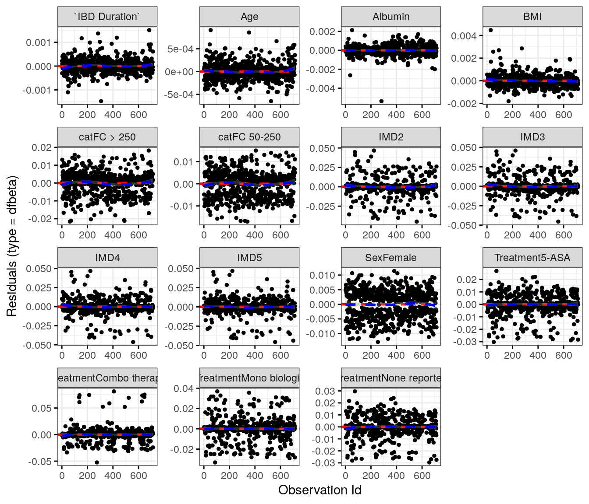
`geom_smooth()` using formula = 'y ~ x'
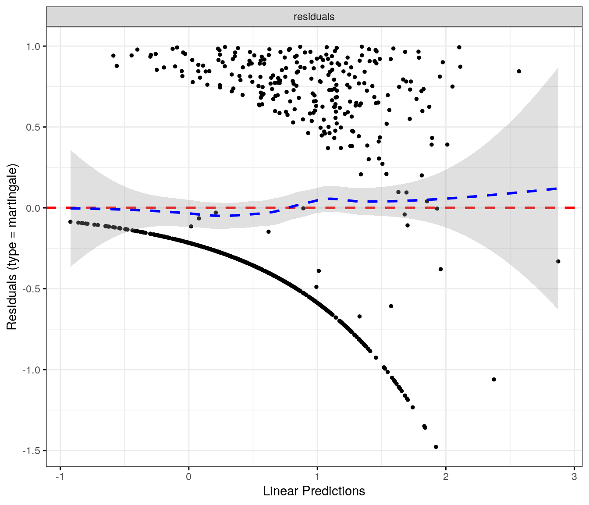
Objective flare
C-reactive protein
Code
fit.me<-coxph(Surv(hardflare_time, hardflare)~Sex+IMD+cat+`IBD Duration`+BMI+Treatment+Age+CReactiveProtein+frailty(SiteNo), control =coxph.control(outer.max =20), data =flare.uc.df)invisible(cox_summary(fit.me))
Cox model summary:
Variable
HR
Lower 95%
Upper 95%
P-value
SexFemale
1.3266
0.9825
1.7911
0.0651
IMD2
1.6258
0.8009
3.3003
0.1785
IMD3
1.4117
0.6999
2.8476
0.3354
IMD4
2.1013
1.0693
4.1295
0.0312
IMD5
1.7372
0.8892
3.3939
0.1060
catFC 50-250
2.1419
1.4976
3.0633
0.0000
catFC > 250
2.9398
2.0222
4.2739
0.0000
IBD Duration
0.9893
0.9714
1.0075
0.2471
BMI
1.0101
0.9818
1.0393
0.4877
TreatmentMono biologic
1.1243
0.6801
1.8585
0.6479
TreatmentCombo therapy
1.0275
0.5445
1.9387
0.9333
Treatment5-ASA
0.9580
0.6161
1.4898
0.8491
TreatmentNone reported
0.8990
0.5689
1.4206
0.6484
Age
0.9880
0.9763
0.9998
0.0456
CReactiveProtein
0.9959
0.9751
1.0172
0.7067
Proportional hazards assumption test
Chi-squared statistic
DF
P-value
Sex
0.4382
0.9869
0.5026
IMD
1.5345
3.9327
0.8127
cat
3.9063
1.9666
0.1380
IBD Duration
1.6503
0.9778
0.1937
BMI
0.0762
0.9838
0.7765
Treatment
20.9558
3.8287
0.0003
Age
0.0766
0.9712
0.7713
CReactiveProtein
0.0002
0.9887
0.9873
GLOBAL
28.7465
25.5184
0.2992
`geom_smooth()` using formula = 'y ~ x'
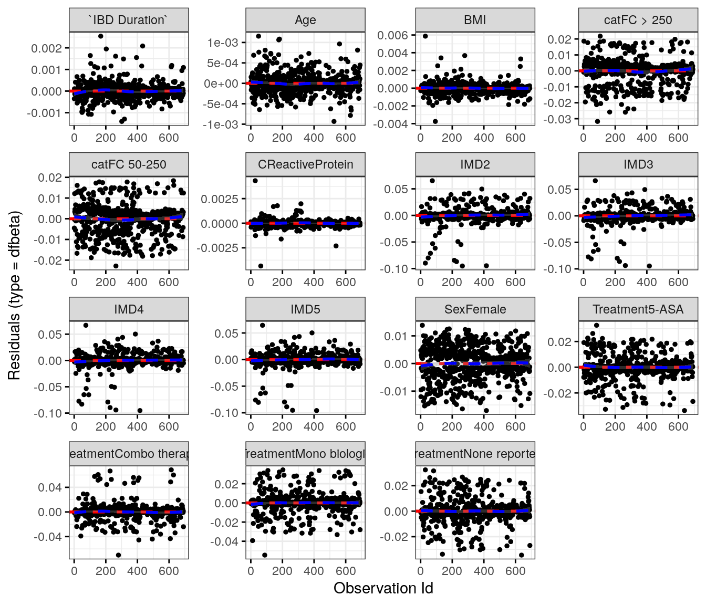
`geom_smooth()` using formula = 'y ~ x'
Haemoglobin
Code
fit.me<-coxph(Surv(hardflare_time, hardflare)~Sex+IMD+cat+`IBD Duration`+BMI+Treatment+Age+Haemoglobin+frailty(SiteNo), control =coxph.control(outer.max =20), data =flare.uc.df)invisible(cox_summary(fit.me))
Cox model summary:
Variable
HR
Lower 95%
Upper 95%
P-value
SexFemale
1.2689
0.8942
1.8008
0.1823
IMD2
1.3100
0.6852
2.5045
0.4142
IMD3
1.1036
0.5791
2.1031
0.7645
IMD4
1.5665
0.8432
2.9101
0.1555
IMD5
1.4111
0.7667
2.5971
0.2685
catFC 50-250
2.0196
1.4142
2.8842
0.0001
catFC > 250
2.8997
2.0025
4.1989
0.0000
IBD Duration
0.9905
0.9734
1.0079
0.2818
BMI
1.0013
0.9734
1.0300
0.9288
TreatmentMono biologic
1.0846
0.6570
1.7905
0.7509
TreatmentCombo therapy
1.0638
0.5668
1.9966
0.8474
Treatment5-ASA
0.9868
0.6377
1.5271
0.9525
TreatmentNone reported
0.8806
0.5583
1.3889
0.5845
Age
0.9895
0.9780
1.0012
0.0772
Haemoglobin
0.9914
0.9783
1.0046
0.2013
Proportional hazards assumption test
Chi-squared statistic
DF
P-value
Sex
0.0847
0.9863
0.7659
IMD
2.2329
3.9344
0.6833
cat
5.3762
1.9709
0.0662
IBD Duration
1.2156
0.9806
0.2646
BMI
0.0334
0.9816
0.8493
Treatment
17.1476
3.8340
0.0015
Age
0.0015
0.9713
0.9654
Haemoglobin
0.9658
0.9862
0.3212
GLOBAL
25.4426
24.4328
0.4060
`geom_smooth()` using formula = 'y ~ x'
`geom_smooth()` using formula = 'y ~ x'
White cell count
Code
fit.me<-coxph(Surv(hardflare_time, hardflare)~Sex+IMD+cat+`IBD Duration`+BMI+Treatment+Age+WCC+frailty(SiteNo), control =coxph.control(outer.max =20), data =flare.uc.df)invisible(cox_summary(fit.me))
Cox model summary:
Variable
HR
Lower 95%
Upper 95%
P-value
SexFemale
1.4318
1.0619
1.9306
0.0186
IMD2
1.3293
0.6948
2.5434
0.3899
IMD3
1.0815
0.5683
2.0582
0.8113
IMD4
1.5146
0.8163
2.8104
0.1880
IMD5
1.3903
0.7574
2.5522
0.2876
catFC 50-250
2.0087
1.4056
2.8707
0.0001
catFC > 250
2.8801
1.9864
4.1760
0.0000
IBD Duration
0.9906
0.9735
1.0081
0.2922
BMI
0.9952
0.9665
1.0247
0.7465
TreatmentMono biologic
1.0271
0.6191
1.7042
0.9174
TreatmentCombo therapy
1.0308
0.5497
1.9330
0.9246
Treatment5-ASA
0.8807
0.5610
1.3826
0.5809
TreatmentNone reported
0.8071
0.5064
1.2863
0.3674
Age
0.9908
0.9792
1.0026
0.1264
WCC
1.0583
0.9774
1.1459
0.1626
Proportional hazards assumption test
Chi-squared statistic
DF
P-value
Sex
0.1295
0.9865
0.7136
IMD
2.3079
3.9352
0.6697
cat
5.3490
1.9719
0.0672
IBD Duration
1.1250
0.9814
0.2832
BMI
0.0388
0.9817
0.8381
Treatment
17.2058
3.8387
0.0015
Age
0.0023
0.9732
0.9577
WCC
0.5024
0.9902
0.4745
GLOBAL
25.1507
24.2412
0.4111
`geom_smooth()` using formula = 'y ~ x'
`geom_smooth()` using formula = 'y ~ x'
Platelets
Code
fit.me<-coxph(Surv(hardflare_time, hardflare)~Sex+IMD+cat+`IBD Duration`+BMI+Treatment+Age+Platelets+frailty(SiteNo), control =coxph.control(outer.max =20), data =flare.uc.df)invisible(cox_summary(fit.me))
Cox model summary:
Variable
HR
Lower 95%
Upper 95%
P-value
SexFemale
1.4532
1.0721
1.9698
0.0160
IMD2
1.2987
0.6789
2.4845
0.4297
IMD3
1.0943
0.5740
2.0864
0.7843
IMD4
1.5309
0.8254
2.8393
0.1766
IMD5
1.3676
0.7449
2.5111
0.3126
catFC 50-250
2.0389
1.4260
2.9153
0.0001
catFC > 250
3.0423
2.1047
4.3976
0.0000
IBD Duration
0.9911
0.9740
1.0085
0.3158
BMI
0.9997
0.9715
1.0288
0.9863
TreatmentMono biologic
1.0937
0.6636
1.8026
0.7254
TreatmentCombo therapy
1.0431
0.5559
1.9573
0.8954
Treatment5-ASA
0.9731
0.6298
1.5035
0.9023
TreatmentNone reported
0.8662
0.5492
1.3661
0.5366
Age
0.9896
0.9781
1.0014
0.0835
Platelets
0.9996
0.9974
1.0018
0.7241
Proportional hazards assumption test
Chi-squared statistic
DF
P-value
Sex
0.1022
0.9860
0.7438
IMD
2.3673
3.9361
0.6589
cat
5.2906
1.9710
0.0691
IBD Duration
1.1990
0.9813
0.2680
BMI
0.0451
0.9823
0.8260
Treatment
17.1265
3.8341
0.0016
Age
0.0003
0.9728
0.9843
Platelets
0.0474
0.9891
0.8240
GLOBAL
24.6162
24.3181
0.4450
`geom_smooth()` using formula = 'y ~ x'
`geom_smooth()` using formula = 'y ~ x'
Albumin
Code
fit.me<-coxph(Surv(hardflare_time, hardflare)~Sex+IMD+cat+`IBD Duration`+BMI+Treatment+Age+Albumin+frailty(SiteNo), control =coxph.control(outer.max =20), data =flare.uc.df)invisible(cox_summary(fit.me))